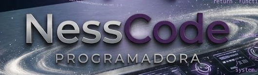
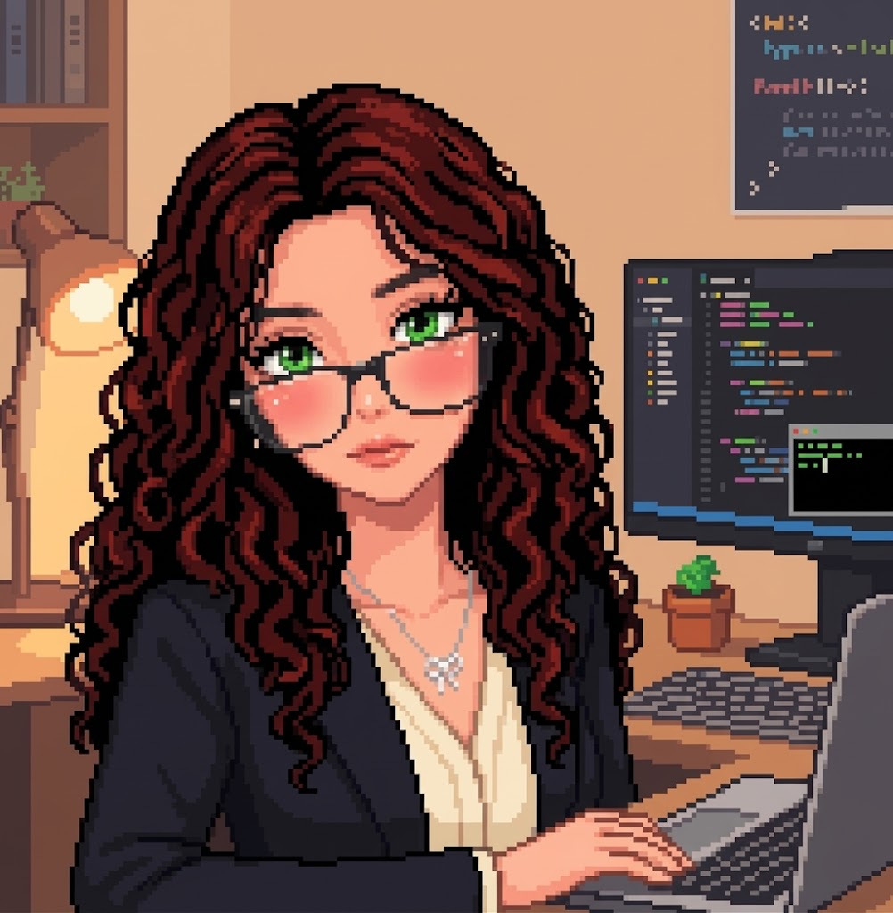

EN CURSO · GRADUACIÓN PREVISTA 2026
Diplomado en Tecnologías de la Información
Colegio Universitario de Cartago. Fundamentos de TI, desarrollo de software, bases de datos y redes.
Colegio Universitario de Cartago
HablemosDESARROLLO .NET · CIBERSEGURIDAD
Soy NessCode, estudiante de Tecnologías de la Información y desarrolladora con experiencia en .NET, bases de datos y soporte TI. Me interesa crecer en desarrollo de software y análisis junior de ciberseguridad.

01 UN POCO SOBRE MÍ
✳Combino desarrollo de aplicaciones, bases de datos y soporte técnico con interés por la ciberseguridad.
He trabajado con C# y ASP.NET Core en soluciones web, datos relacionales, APIs y control de accesos. Mi experiencia de pasantía también incluye soporte Windows, redes LAN y documentación técnica.
Mi formación y experiencia ↗La curiosidad se vuelve habilidad cuando la llevas a la práctica.
Las mejores interfaces comienzan por escuchar a quienes las usan.
Pequeñas decisiones hacen que una experiencia se sienta completa.
02 FORMACIÓN Y EXPERIENCIA
Aprendiendo y creciendo ↗Una base en tecnologías de información, práctica real en soporte y desarrollo, y aprendizaje continuo en nube, inglés y seguridad digital.
Colegio Universitario de Cartago. Fundamentos de TI, desarrollo de software, bases de datos y redes.
Colegio Universitario de CartagoFormación técnica en Contabilidad en el Colegio Técnico Profesional Santa Lucía.
Colegio Técnico Profesional Santa LucíaFundamentos de redes, direccionamiento IP, LAN y configuración inicial de switches y routers.
Explorar los contenidos ↗Inglés aplicado a software, redes, ciberseguridad, gestión de productos y atención al cliente.
Información del curso ↗Principios de Scrum, marco de trabajo ágil y fundamentos para organizar la entrega de proyectos.
Registro de certificaciones ↗Participación en la jornada formativa «Desarrollo con IA: Programa con Agentes» (6 horas).
Conocer a MoureDev ↗Formación continua en conceptos, servicios y herramientas cloud mediante cursos y laboratorios prácticos.
Catálogo de aprendizaje ↗Práctica del idioma a través del programa Hello Brete en alianza con Open English. Además, el CV reporta nivel B2.
Plataforma Hello Brete ↗Municipalidad de Paraíso
Soporte a entornos Windows y Microsoft 365, instalación de software, solución de incidencias de red LAN y direccionamiento IP. Elaboración de guías de usuario y documentación de procesos técnicos.
03 PROYECTOS DESTACADOS
Explorar GitHub ↗Proyectos web y herramientas internas en los que apliqué desarrollo, gestión de datos y automatización.
✳ Las descripciones resumen tu CV. Enlaza repositorios o capturas públicas cuando tengas esos enlaces disponibles.
04 ¿TIENES UNA IDEA?
Si tienes un proyecto en mente o simplemente quieres saludar, mi bandeja está abierta.
Escríbeme un correo ↗